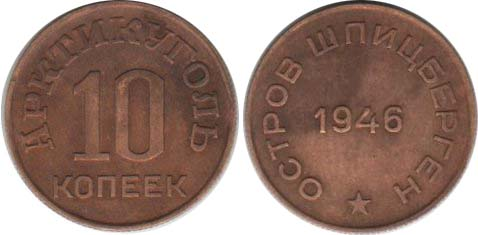
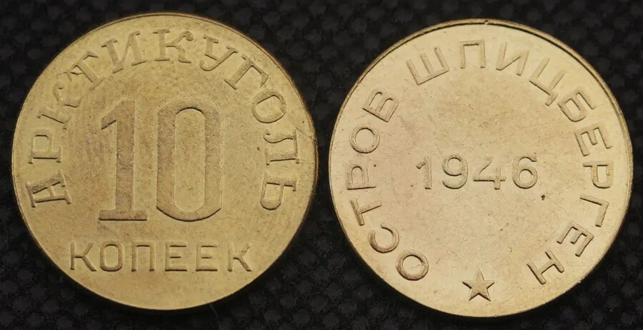
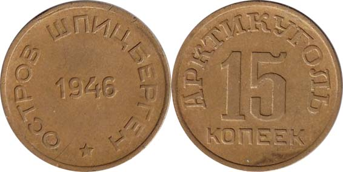
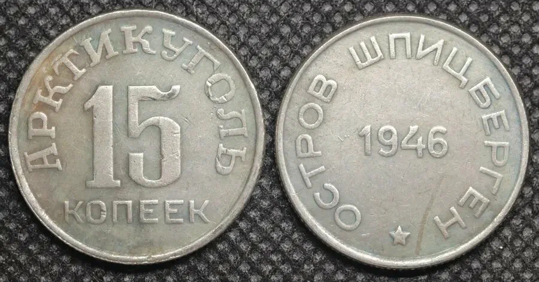
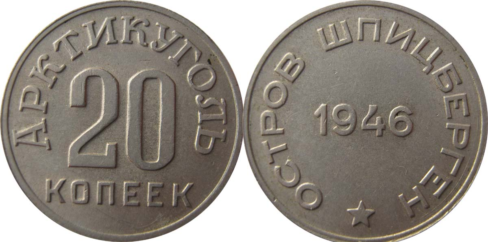
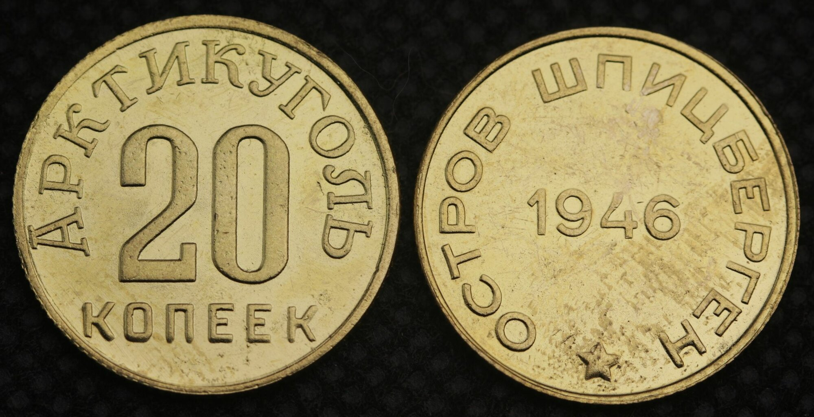
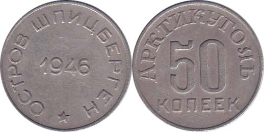
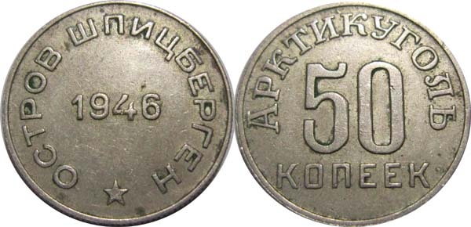
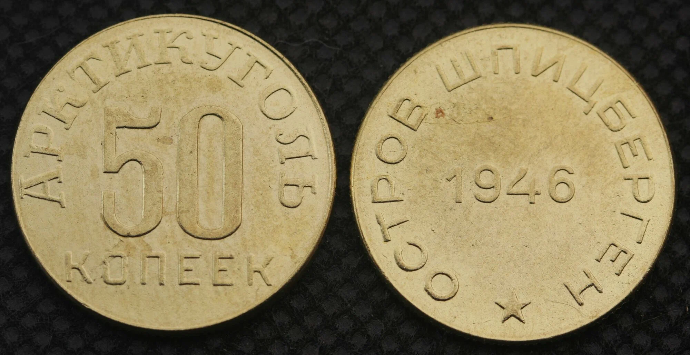

Просмотр монеты

10 копеек, 1946 год

10 копеек, 1946 год, реплика

15 копеек, 1946 год

15 копеек, 1946 год, реплика

20 копеек, 1946 год

20 копеек, 1946 год, реплика

50 копеек, 1946 год
Версия с маленькой звездой на реверсе

50 копеек, 1946 год
Версия с большой звездой на реверсе

50 копеек, 1946 год, реплика

10 рублей, 1993 год
Выберите монету в каталоге, чтобы увидеть её полноразмерное изображение.